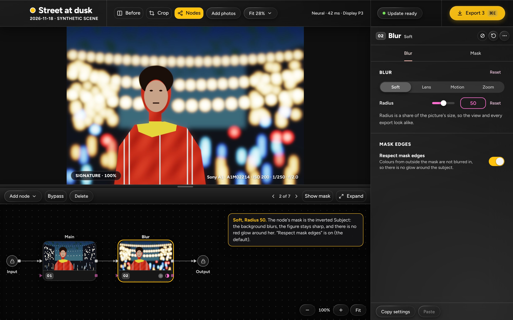
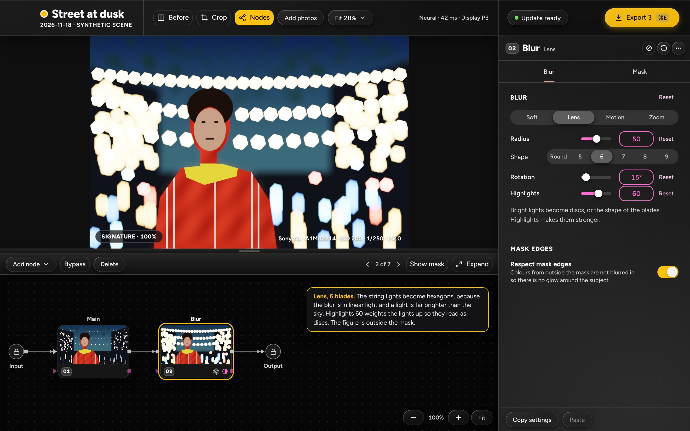
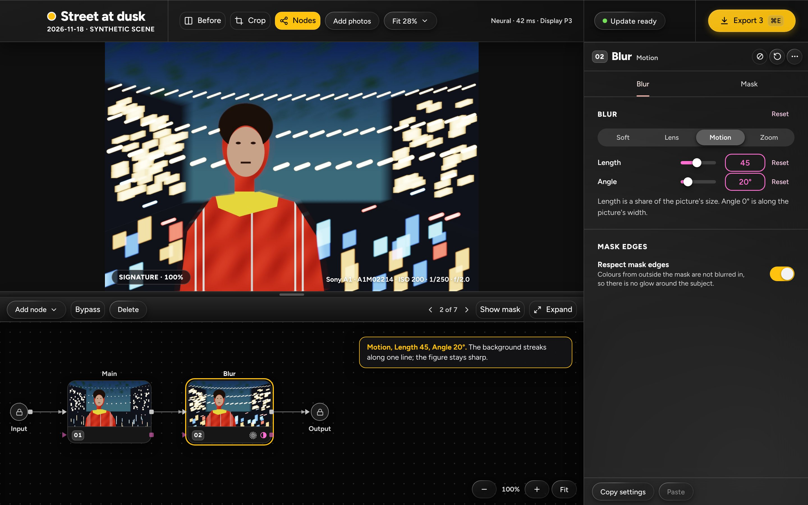
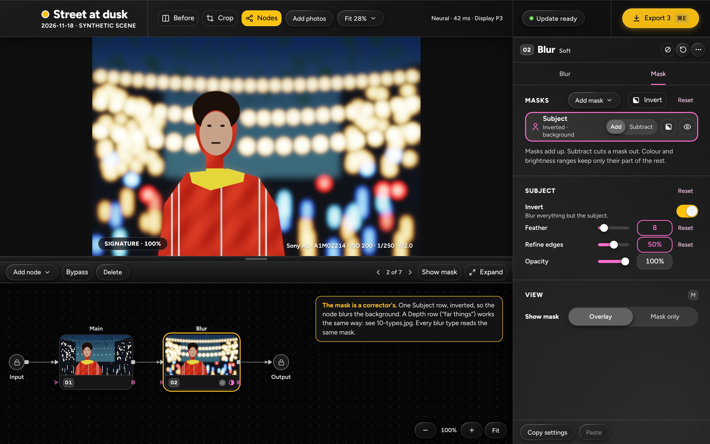
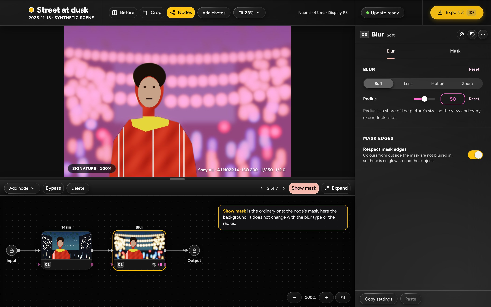
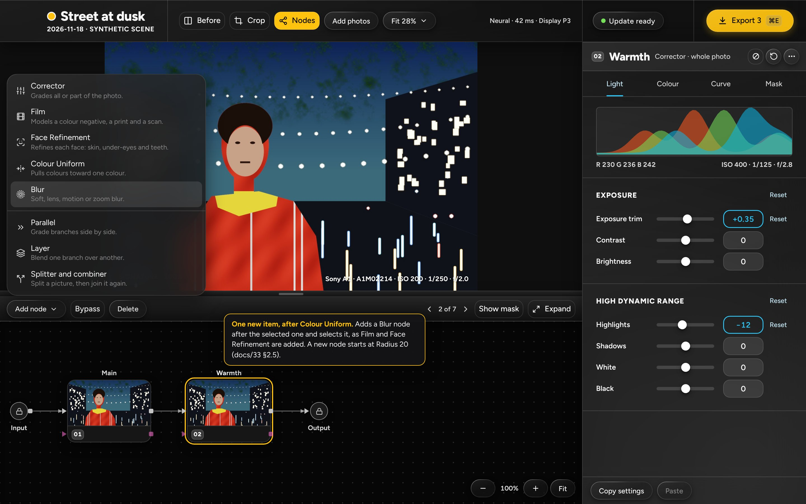
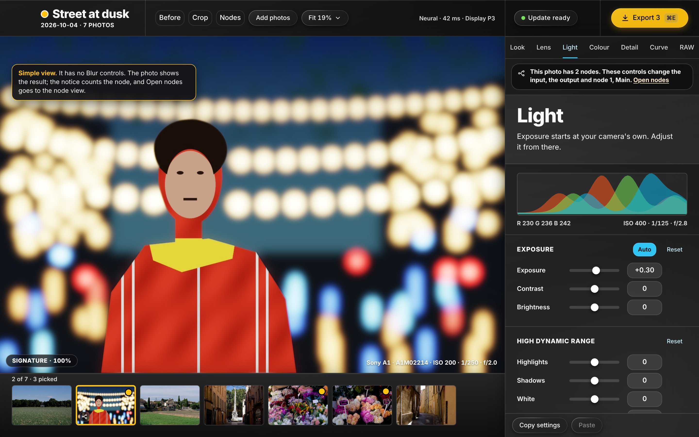
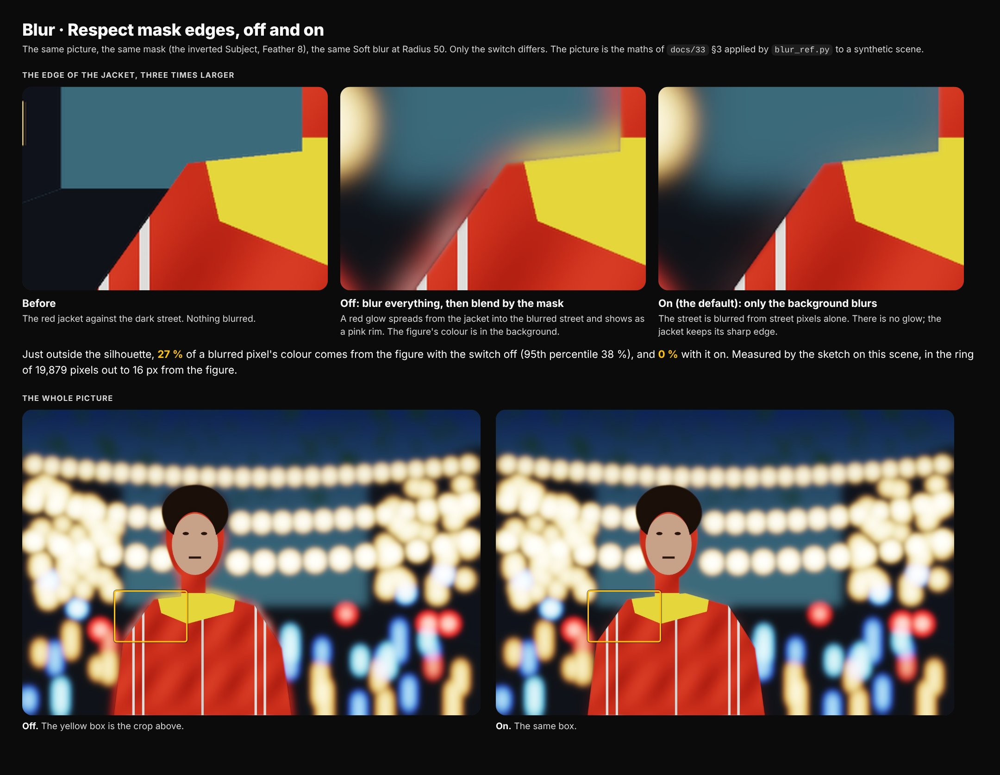
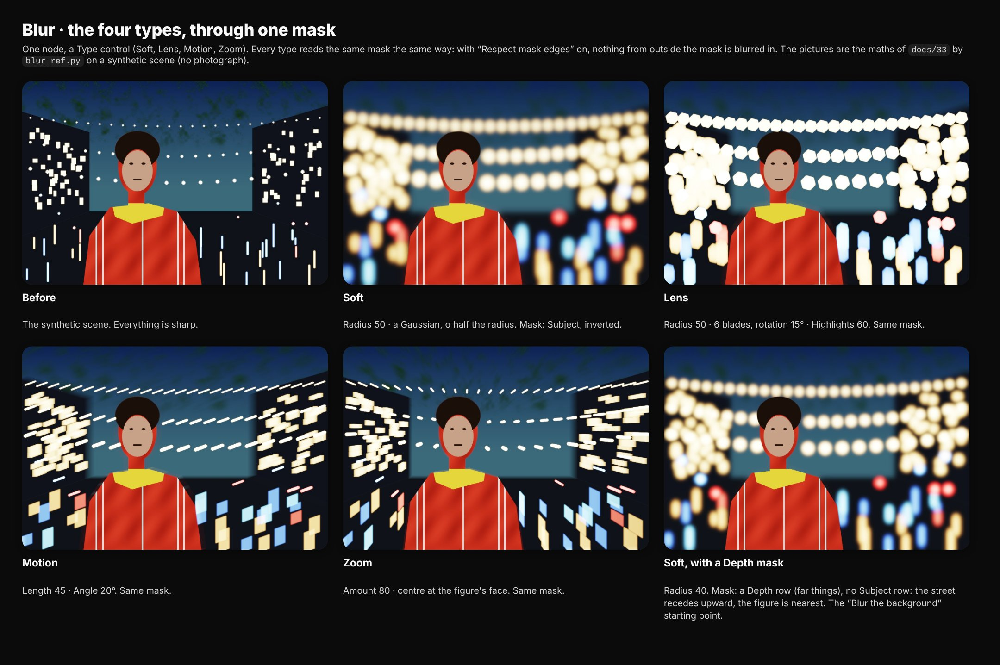
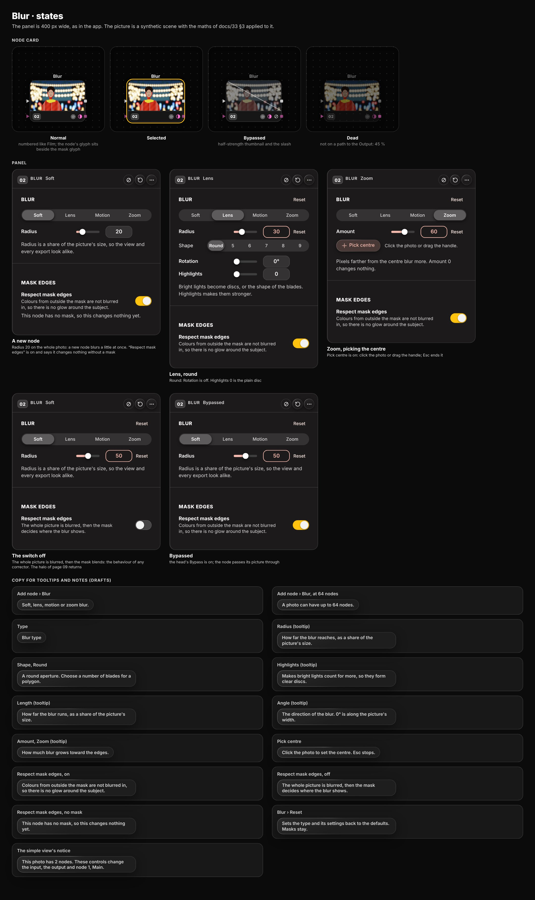

The spec is docs/33; its §10 has the questions for the owner (BL-H1), each with a recommended default. mockup-notes.md lists what the drawings decided. The research is research/blur-node-2026-11-18.md.
Soft

Main, a Blur node, the Output. Soft, Radius 50, through the inverted Subject mask: the street is blurred, the figure stays sharp, and there is no red glow around it.
- The Type control is a segmented control at the top of the Blur card; the card changes with the type.
- Mask edges is its own card: the switch Respect mask edges, on by default.
Lens

Lens, Radius 50, 6 blades, Rotation 15°, Highlights 60. The string lights and the windows become hexagons because the blur is in linear light, where a light is far brighter than the sky.
- Shape: Round, or 5 to 9 blades. Rotation is off with Round.
- Highlights weights the bright lights up so they read as discs.
Motion

Motion, Length 45, Angle 20°. The background streaks along one line; the figure is outside the mask and stays sharp.
- Length is a share of the picture's size (100 is 8 % of the long edge).
- Angle 0° is along the picture's width.
Zoom
Zoom, Amount 80, with the centre on the figure's face. The handle and its rays are drawn over the photo; Pick centre in the card puts the centre where the person clicks.
- Pixels farther from the centre blur more; the centre stays sharp.
- The centre follows crop and rotation; Reset puts it back in the middle.
The Mask tab

A corrector's Mask tab: one Subject row, inverted, so the node blurs the background. A Depth row works the same way (picture 10). Every blur type reads the same mask.
- Feather 8 on the Subject row is the mask's own feather: the Blur node reads the finished mask.
- A Linear row with a feather is a tilt-shift band: a mask plus a Blur node, not a type.
Show mask

Show mask (M) is the ordinary one: the node's mask, here the background, in the mask accent. It does not change with the type, the radius or the switch.
- A node with no mask shows the whole photo tinted.
Add node › Blur

The new item sits after Colour Uniform, with the line "Soft, lens, motion or zoom blur."
- It adds one Blur node after the selected one and selects it.
- A new node is Soft at Radius 20, so it blurs a little at once (docs/33 §2.5).
- Off at 64 nodes, with the usual tooltip.
The simple view

No Blur controls. The photo shows the result; the notice counts the node and offers Open nodes (docs/23 §6).
Respect mask edges, off and on

The owner's first requirement. The same picture, mask and Soft blur; only the switch differs. Off: blur everything, then blend by the mask, so the figure's red spreads into the blurred street and shows as a rim. On (the default): only background pixels are blurred, so there is no glow and the jacket keeps its edge.
- Just outside the silhouette 27 % of the blurred colour comes from the figure with the switch off, 0 % with it on (measured by the sketch on this scene).
- The one limit of "on": it never spreads light out of the mask, so a blurred subject keeps a sharp outline. For a glow that should spread, switch it off.
The four types through one mask

The scene, then Soft, Lens (hexagons), Motion and Zoom through the same inverted Subject mask with the switch on, and Soft through a Depth mask (the street recedes upward) instead of a Subject row.
- Every type reads the mask the same way.
- The Depth picture is the "blur the background" starting point that question 7 of docs/33 §10 asks about.
States and copy

Node card states; the panel for a new node, a round Lens, Zoom while picking the centre, the switch off and bypassed; and the drafts of every tooltip and note.